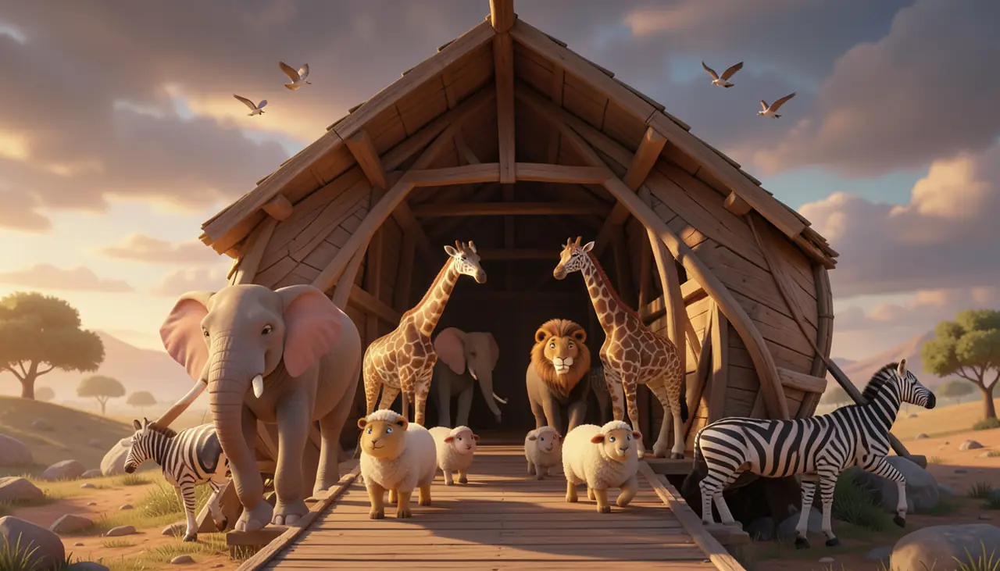
Nouh et l’arche
نُوحٌ عَلَيْهِ السَّلَامُ
Un livre animé : fais défiler l’histoire avec ton doigt,
ou touche « Raconte-moi ».
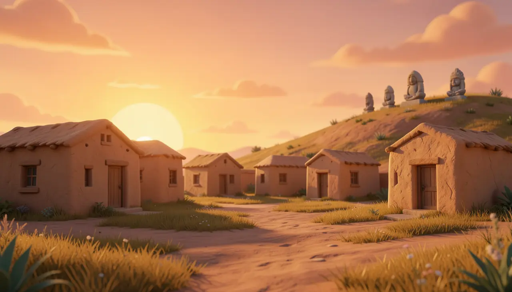
1 · Les gens oublient Allah
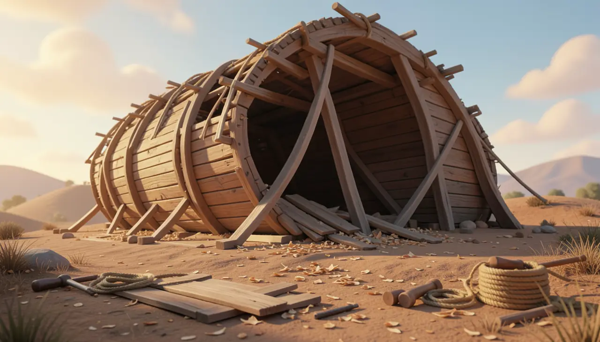
2 · Nouh construit l’arche
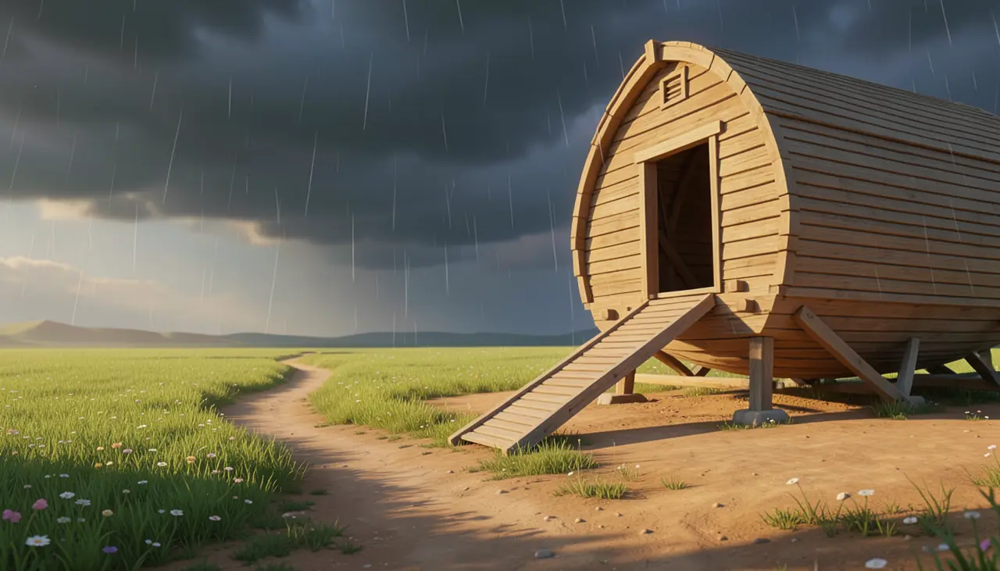
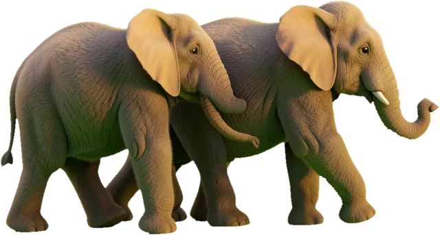
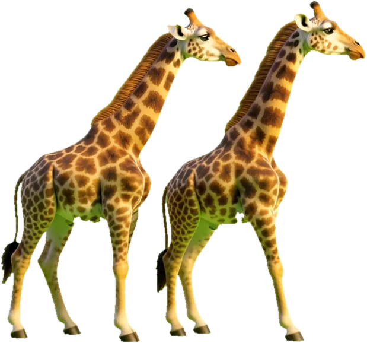
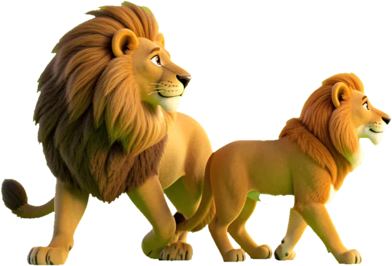
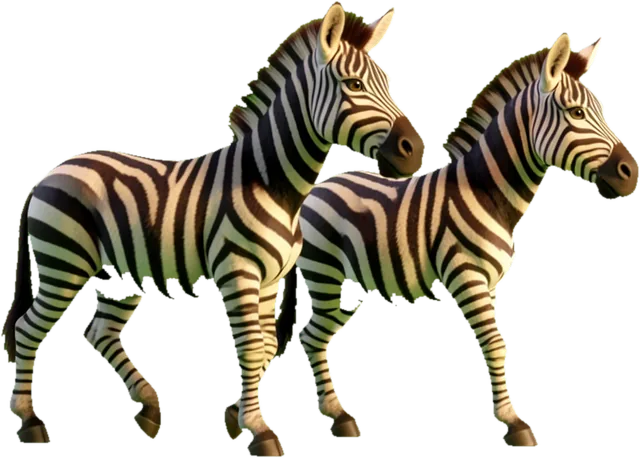
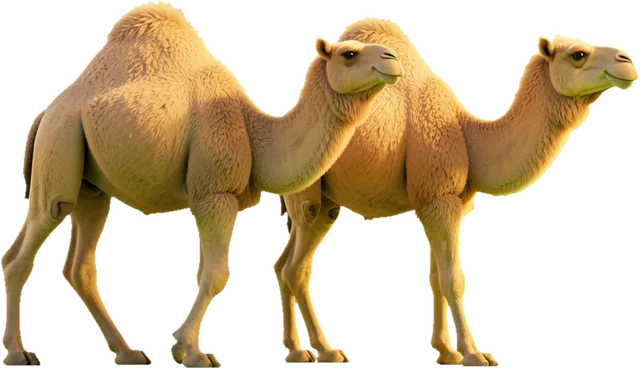
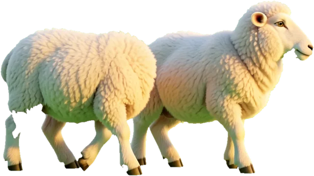
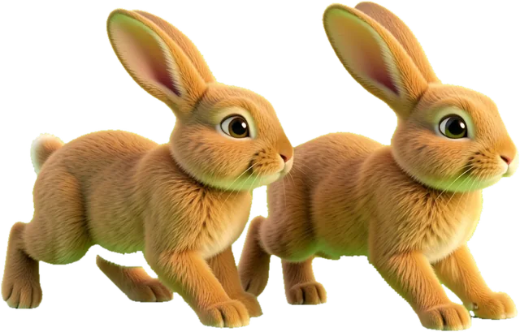
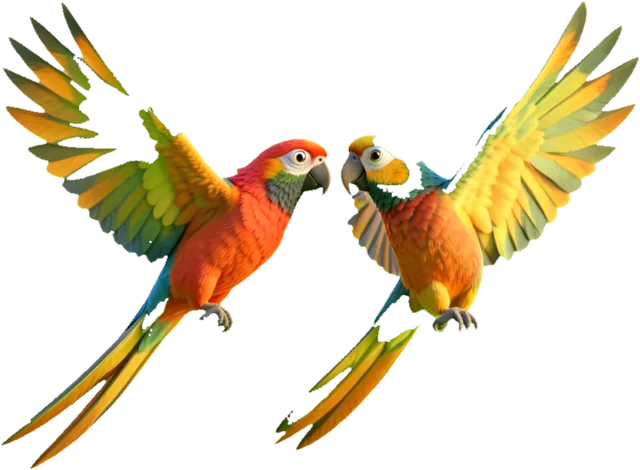
3 · Les animaux montent deux par deux
📖 Houd, verset 41
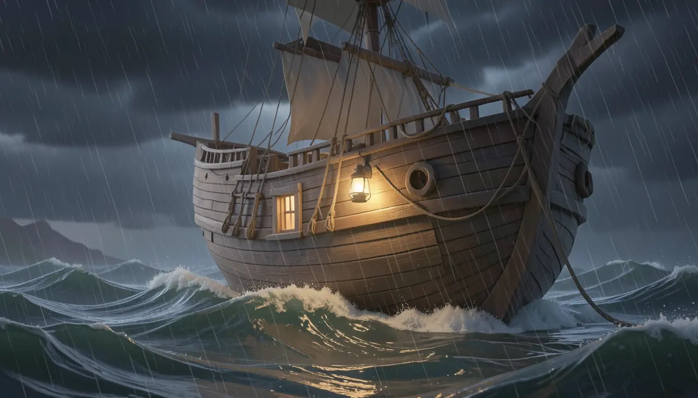
4 · L’arche sur les vagues
5 · Le mont Djoudi